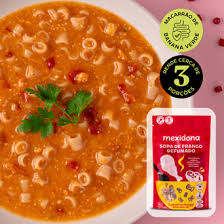

-
Segunda-feira
Sopa de Frango
A Sopa de Frango Defumado é cremosa e aconchegante, feita com frango desfiado e um leve toque defumado, que realça o sabor sem sobrecarregar.
-
Terça-feira

Sopa Rosa
A Sopa Rosa, que ganha esse nome por ser feita com lentilha rosa, além de quinoa, alho-poró, tomate e páprica defumada.
-
Quarta-feira

Sopa Indiana
Sem glúten - sem sal - sem conservante - 100% natural.
-
Quinta-feira

Risoto de Cogumelo
Refeição saudável e descomplicada que te salva no dia a dia.
-
Sexta-feira

Sopa Detox
Com ingredientes naturais como quinoa, couve, espinafre e macarrão sem glúten de farinha de banana verde, essa sopa é rica em fibras solúveis e insolúveis